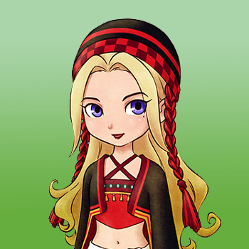

Jennifer es un nuevo personaje agregado para esta versión remasterizada del juego de GBA Friends of Mineral Town para la Nintendo Switch. Ella solía vivir en una gran ciudad, pero decidió mudarse a un lugar menos agitado para poder estar más conectada de la naturaleza. Ella ha levantado una tienda de campaña en la costa de la mina del lago para de esa forma observar y absorber la energía del entorno que la rodea.
Si te casas con Jennifer, ella comenzará su día dentro de tu casa de campo, pero luego recorrerá sus visitas a la tienda, a los comerciantes y al parque forestal, hasta terminar regresando a tu casa de campo por la noche. En los días de lluvia o nieve, se quedará en casa todo el día al igual que las mascotas.
| Cumpleaños | Invierno 2 (primario) o Invierno 18 (alternativo) |
|---|
| Amistad extra | (Ninguno) |
|---|
| Rival | (Ninguno) |
|---|
| Horario |
- Aunque puede tener una tienda de campaña, no vive en ella.
- La mayoría de los días de la semana, Jennifer pasa la noche en la posada y se dirige a su tienda alrededor de las 8:00 am.
- A primera hora de la tarde visitará a Lillia en la granja avícola (lunes), a Mugi en el rancho Yodel (martes) o al parque boscoso en el centro de la ciudad (miércoles a sábado).
- Luego a media tarde regresará a su tienda de campaña por unas horas hasta regresar a la posada alrededor de las 8:00 pm. Los domingos va directamente al bosque, luego a la playa alrededor de las 13:00 y luego regresa a la posada por la noche.
- En cualquier día lluvioso o nevado, Jennifer se quedará en la posada hasta las 10:00 a. m., luego pasará la mayor parte del día en la tienda y regresará a la posada a las 8:00 pm.
|
|---|
Jennifer cuenta con un evento especial y lo puedes consultar en evento aleatorio.
Preferencias de regalos
La mejor forma de mejorar la amistad y el afecto es siempre regalar las cosas que le gusta una vez por dia.
|
|
|
- Madalenas
- Galletas con chocolate
|
|
- Lanas (C/T) (C/A)
- Todos los cultivos
- Huevo (C/T)
- Leche (T) (C/T)
- Todas las flores
- Hilos (C/T)
- Castaña
- Pan de pasas
- curry en polvo
- Harina de dango
- Harina de trigo
- Harina de trigo sarraceno
- Torta de fresa
- Soba con tempura
- Zarusoba
- Cocido
- Hongo pino
- Miel
- Golosina para mascotas
- Pelota para mascotas
- Arroz con bambú
- Palbochae
- Huevos benedictos
- Concentrado de frutas
- Puré De Patatas
- Arroz con hongo pino
- Filete a la pimienta
- Pulsera
- Broche
- Pendientes
- Ramen Picante
- Concentrado de frutas
- Potaje de calabaza
- Quiche
- Dorayaki
- Agua de uvas silvestres
- Hojas de té relajantes
- Pizza de verduras
- Pizza Margarita picante
- Maíz Asado
- Filete de pimienta picante
- Salteado de verduras picantes
- Collar
- Aceite
- Zumo de piña
- Sándwich Picante
|
|
- Lata vacía
- Queso (C/T)
- Rama
- Todos los minerales y gemas
- Fondue de queso
- Carta en botella
- Bota de goma
- Pescado (C/T)
- Forraje
- Hongo Venenoso
- Paella
- Pasta a la carbonara
- Sashimi
- Arroz con marisco
- Sopa de pescado
- Sushi
- Vestido
- Mascarilla
- Perfume
- Bloqueador solar
- Pescado a la plancha
- Loción para la piel
- Piedra
- Buñuelo de pescado
- Acqua pazza
- Fósil Antiguo
- Torta de queso
- Roca
- Madera
- Tesoro Pirata
- Alimento para pollos/conejos
- Risotto de queso
- Piedra Tomatosetta
- Tarta de queso esponjosa
- Madera Dorada
- Carpaccio
|
Eventos del corazón
Cada evento que ocurra el jugador tendra que escoger entre dos respuesta en la que uno ayuda a conseguir muchos puntos y la otra suele ser neutral o quitar puntos.
Cuando el candidato tenga corazón naranja puedes proponerle matrimonio con la pluma azul y despues de la boda tendra un corazón rojo.
Evento de introducción
| Corazón | Requisitos | Mejor espuesta |
|---|
|
- Camine hacia el área de la mina del lago.
- No puede Domingo.
- 10:00 am a 12:00 pm
- Tiempo soleado
|
Opción 2: Sí, mis chakras están totalmente alineados. |
Evento del corazón Negro
| Corazón | Requisitos | Mejor respuesta |
|---|
|
- Camine hacia el área de la mina del lago.
- No puede Domingo.
- 10:00 am a 12:00 pm
- Conoces a Basil.
- Tiempo soleado
- Has visto el evento de Introducción
- Jennifer tiene un color de corazón negro (5.000 LP) o superior.
|
Opción 2: Sí!, ¡Poder de la flor! |
Evento del Corazón Púrpura
| Corazón | Requisitos | Mejor respuesta |
|---|
|
- Camine hacia el área de la mina del lago.
- No puede Domingo.
- 10:00 am a 12:00 pm
- Debe ser soleado
- Has visto el evento de corazón negro
- Jennifer tiene un color de corazón púrpura (10.000 LP) o superior.
|
Opción 1: Algo angelical. |
Evento del Corazón Azul
| Corazón | Requisitos | Mejor respuesta |
|---|
|
- Entra en la tienda de la granja avícola.
- No puede Domingo.
- 11:10 am a 4:00 pm
- Cualquier clima
- Tener un espacio vacío para objetos en tu mochila.
- Has visto el evento de corazón púrpura
- Jennifer tiene un color de corazón azul (20.000 LP) o superior.
|
Opción 2: Vaya. Tienes un gran corazón. |
Evento del Corazón Amarillo
| Corazón | Requisitos | Mejor respuesta |
|---|
|
- Entra en la tienda de Jennifer.
- Cualquier día de la semana.
- 10:00 am a 4:00 pm
- Debe ser soleado
- Has visto el evento de corazón azul
- Le has regalado a Jennifer una flor preservada.
- Jennifer tiene un color de corazón amarillo (40.000 LP) o superior.
|
Opción 2: La felicidad triunfa sobre la riqueza. |
Evento del Corazón Naranja
| Corazón | Requisitos | Mejor respuesta |
|---|
|
- Sube al segundo piso de la posada.
- Cualquier día de la semana.
- 19:00 a 21:00
- Cualquier clima
- Has visto el evento de corazón amarillo
- Jennifer tiene un color de corazón naranja (50.000 LP) o superior.
|
Opción 2: Intentaré no preocuparte. |